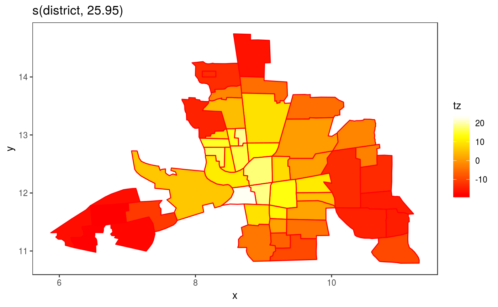
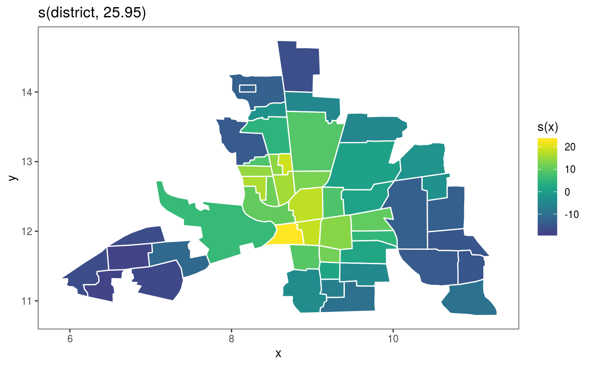

This is the plotting method for Markov random field smooths.
# S3 method for mrf.smooth plot(x, trans = identity, seWithMean = FALSE, unconditional = FALSE, ...)
| x | a smooth effect object, extracted using mgcViz::sm. |
|---|---|
| trans | monotonic function to apply to the smooth and residuals, before plotting. Monotonicity is not checked. |
| seWithMean | if TRUE the component smooths are shown with confidence intervals that include the uncertainty about the overall mean. If FALSE then the uncertainty relates purely to the centred smooth itself. Marra and Wood (2012) suggests that TRUE results in better coverage performance, and this is also suggested by simulation. |
| unconditional | if |
| ... | currently unused. |
An objects of class plotSmooth.
Marra, G and S.N. Wood (2012) Coverage Properties of Confidence Intervals for Generalized Additive Model Components. Scandinavian Journal of Statistics.
library(mgcViz) ## Load Columbus Ohio crime data (see ?columbus for details and credits) data(columb) ## data frame data(columb.polys) ## district shapes list xt <- list(polys=columb.polys) ## neighbourhood structure info for MRF par(mfrow=c(2,2)) ## First a full rank MRF... b <- gam(crime ~ s(district,bs="mrf",xt=xt),data=columb,method="REML") b <- getViz(b) # Manual plot plot(sm(b, 1)) + l_poly(colour = 2) + scale_fill_gradientn(colours = heat.colors(50))#> #>